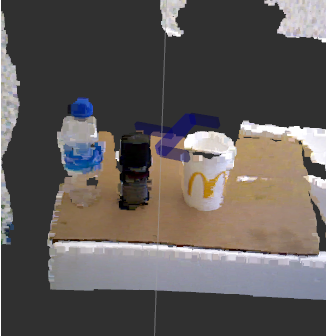

Deep Reinforcement Learning Hyperparameter Optimization Utilizing Genetic Algorithms
Leveraged genetic algorithm optimization for hyperparameters within OpenAI deep reinforcement learning environments, yielding a significant, albeit variable, enhancement in task convergence speeds
- Python
- Analytics
- ROS
- Deep Reinforcement Learning
- Genetic Algorithms
- LaTeX
Pick and Place Task
The GA-DRL approach converges by epoch 30, whereas the standard DRL method takes until epoch 80. This indicates that, with our proposed hyperparameter selection technique, convergence is achieved 2.67 times more quickly than when using the original hyperparameters.
Pick and Place Task
The GA-DRL approach converges by epoch 30, whereas the standard DRL method takes until epoch 80. This indicates that, with our proposed hyperparameter selection technique, convergence is achieved 2.67 times more quickly than when using the original hyperparameters.
Pick and Place Task
The GA-DRL approach converges by epoch 30, whereas the standard DRL method takes until epoch 80. This indicates that, with our proposed hyperparameter selection technique, convergence is achieved 2.67 times more quickly than when using the original hyperparameters.
Pick and Place Task
The GA-DRL approach converges by epoch 30, whereas the standard DRL method takes until epoch 80. This indicates that, with our proposed hyperparameter selection technique, convergence is achieved 2.67 times more quickly than when using the original hyperparameters.
Simulation to Reality
The Aubo Robotic Arm uses hyperparameters that are genetically tuned to complete the pick-and-place task after training through simulations. The similuated was a custom creation for a pick and place task.
Pose Estimation

I first need to segment out the object in question to perform pose estimation
Once the object is segmented out we cna perform pose estimation to get a decent transformation that the robotic arm can try to move to.